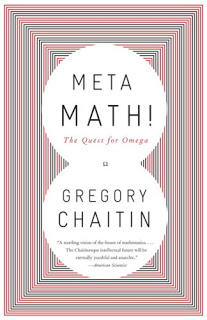

Meta Math! The Quest for Omega
Tuesday August 23, 2011
Meta Math! : the quest for omega
Gregory ChaitinSo, I've been carrying around this book for maybe three or four years now. Carried it to Korea. Carried it back to the US. Finally read it this summer! Whoo!
It's pretty okay. I think the author and I would get along philosophically, in terms of liking ideas more than writing proofs. Because proofs are boring. And hard. But he would probably still write more proofs than me. Memorable moment from the book: when he just mentions "casually" that he wrote a Diophantine equation that evaluates LISP expressions - to the tune of 200 pages and 20,000 variables. HOLY CRAP, MAN!
In the introduction, he dismisses people who get all worked up about Gödel. In the sense that Gödel didn't destroy math - he actually made it cooler. So I liked Gregory Chaitin from the introduction. The heck with you, people who think Gödel wrote a proof of god or something weird like that.
Oh - I also liked him on page nine, where he says "math is a free creation of the human mind" - which is a fully reasonable thing to say. I wish people would just agree with me and Chaitin.
Another interesting thing: Chaitin is very much concerned with whether the universe is continuous or discrete. ME TOO. At least, when I sat down to try to make a simulation of the universe, it quickly occurred to me that you kind of have to make that choice in your design: is the universe going to be continuous or discrete? And it sort of seems that either way, it's going to be ridiculous. If it's continuous, you have issues with floating-point implementation in your simulation and also the possibility of way too much stuff in way too little space (well, if you have point particles; and if you don't have point particles, I think you have some issues there too). And a discrete universe just seems weird. Oh BTW! Chaitin seems to be friends with Wolfram! They don't perfectly agree about things, but Meta Math does reference Wolfram and A New Kind of Science multiple times.
Chaitin is even anti-Real number! I guess I'm also anti-Real number, in the same sense that I'm anti-unicorn; I can appreciate Real number math, and I can appreciate unicorn stories, but that doesn't mean that they suddenly become existent/real in the usual sense. Also I can't think of a unicorn story that I appreciate all that much, just at the moment, but I maintain that it is theoretically possible.
What else? He goes into some proofs of the infinitude of primes that I hadn't seen before but that are really cool and have cool connections to other math. So that was fun.
Problem with the writing: I think Chaitin is trying to be a little too Gödel, Escher, Bach - and can't pull it off. In a chapter called "Intermezzo" he includes "The Parable of the Rose" - but the parable doesn't connect as perfectly with the real material of the book as would really be nice. It's just not the perfect metaphor he wishes he had. Cool story, but it seems like he's misreading it.
So what's omega? He barely deals with this himself, because he's just so weird, and omega is so weird. Omega is the probability that a random computer program will halt. Meaning a random collection of ones and zeroes (or whatever) of random length. So omega depends on the computer language or computer (or whatever) and is devilishly difficult to work out. This is kind of neat, and shows Chaitin's sort of incompleteness / minimum complexity ideas, but it isn't a number you're likely to need on your calculator or anything.
Fun book! Felt like I was continuing my reading from when I was just finishing my MAT!

This post was originally hosted elsewhere.